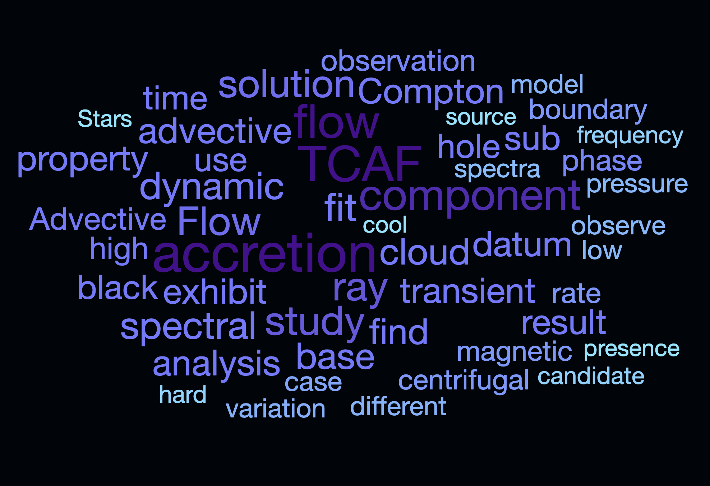
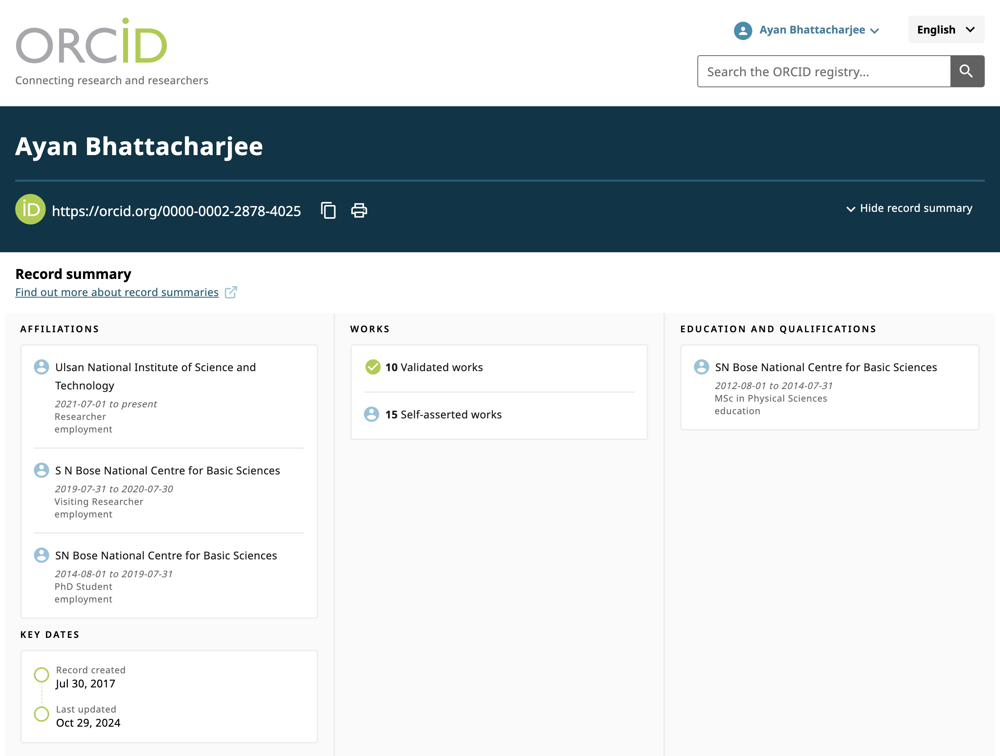
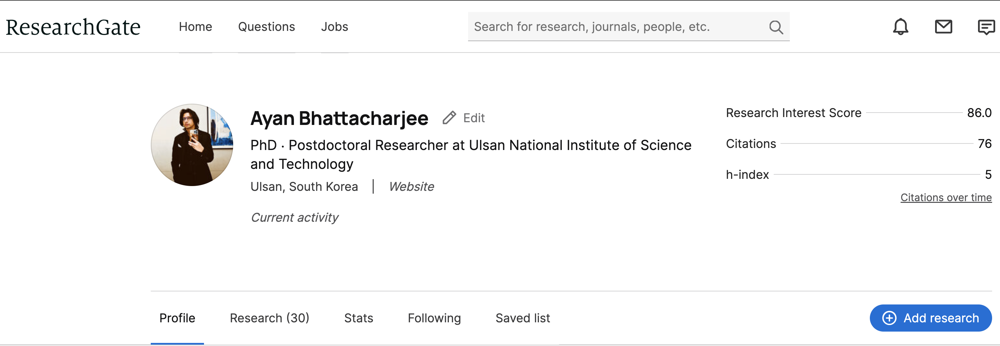
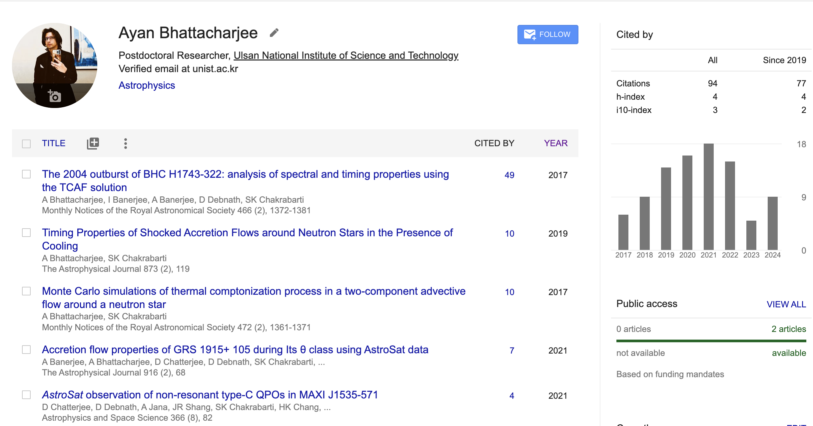

One can easily find most of his works through the links provided below, however dealing with pop-culture references might be tough (sigh..).
 For those, taking refuge among the stars, the Prime location for his work is NASA’s newest roll-out of ADS, BumbleBee.

Here’s a safe path to Mordor his ORCID, which one can simply walk into.

For those who want to keep an eye on The Black Gate his Researchgate alter ego, safe passage can be found down the web-link.

Here’s the link to his Google Padowan Scholar.
Curriculum Vitae
As if it wasn’t self-promoted enough, here’s the enterprise edition of list the of lore skills, service records, and manuscripts, some published and some in Q continuum perpetual purgatory of revision. All the Data is Laforged into a Personal Dossier. Engage, if you will wheaton.